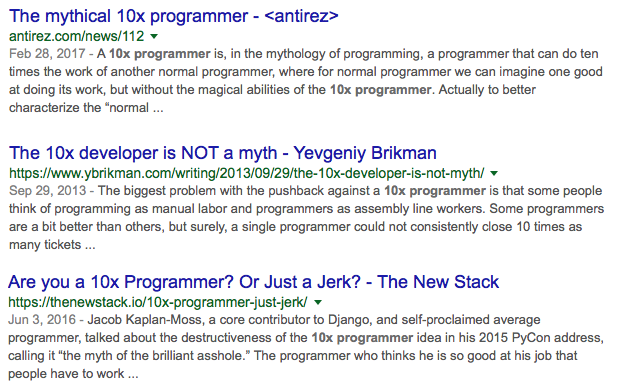
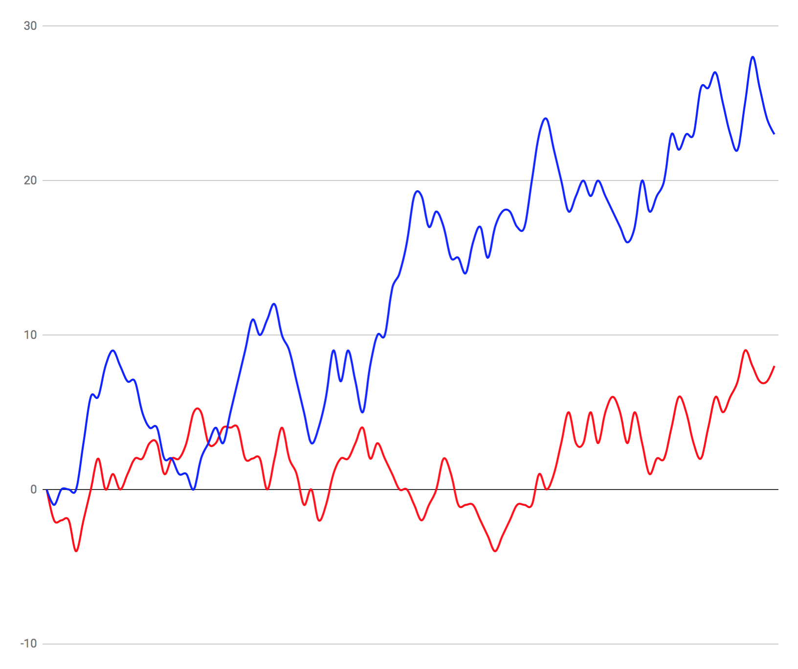
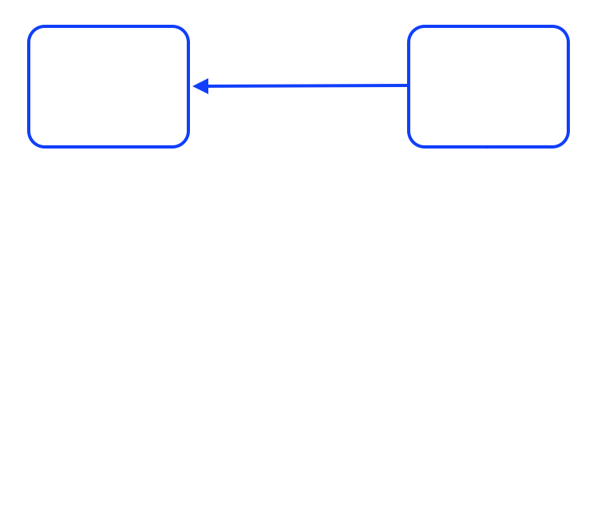
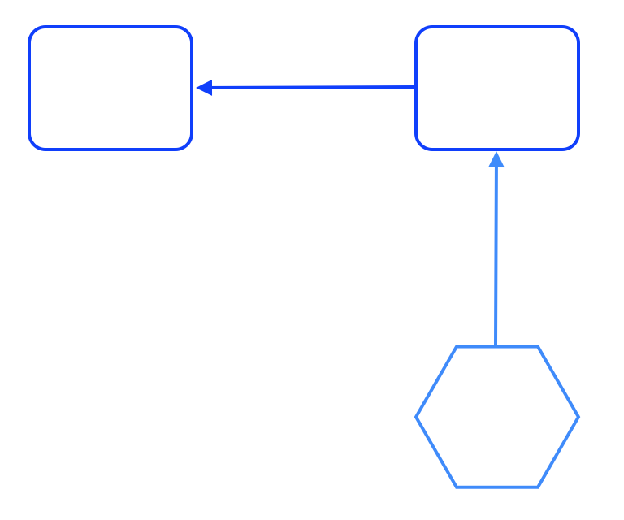
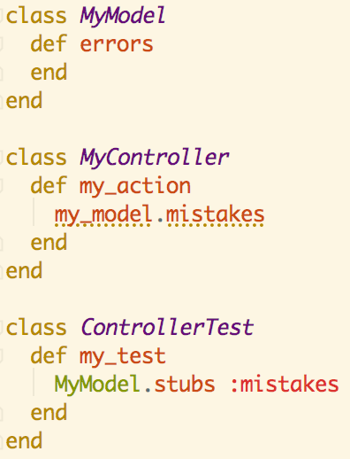
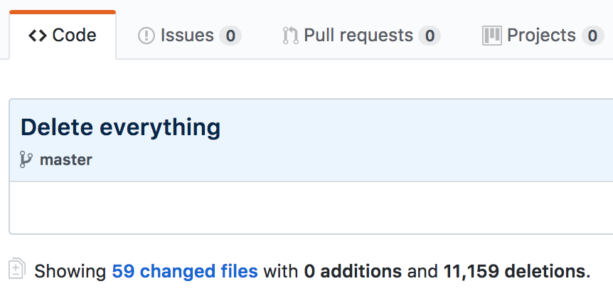

layout: false class: center, middle ## Habits of a 2.76x Developer ??? TODO: - Disable OS notifications. - - IF YOU NEED SLACK ALERTS FROM THE HOST THOUGH, MAY WANT TO LEAVE THEM ON. - - (sharing in some online tools will hide the video feed from everyone else). - Shut down other apps. - Adjust the presenter notes font size. - Reload, then Clone (`c` shortcut). --- class: center, middle ## Habits of a 2.76x Developer ??? -- Talk prepped for Jan 2018 meetup of http://devproductivity.io My name is Chris Morris, I've been developing software for over 20 years, I'm currently the Director of Engineering at Mystery Science, before that I spent 6 years at LivingSocial/Groupon and am technically still a core team member of Bundler, but I haven't contributed there in a while. This is a new talk, I appreciate y'all letting me try it out here, would love your feedback on it. It's mostly tech agnostic, but as I've been a die-hard Rubyist for ever, Ruby will get a little bias. Before we get going, some shout-outs: --- # Healthy Programmer .center[<img src="http://imagery.pragprog.com/products/323/jkthp.jpg" style="width: 40%;" /> <img src="http://33.media.tumblr.com/3a67e4ea496cbad39b23bf48e046c810/tumblr_nasiplAH851qhu3vxo1_500.gif" style="width: 50%; margin-bottom: 75px" />] ??? This book was published in 2013, so, y'know, like light years ago, but The Healthy Programmer has some wonderfully practical advice for those of us who make a living the way we do. In short: "Read this book so you don't die in your chair." Hat tip to my friend Sara Flemming for the jeh-gif. I never know how to say it, so I just say it both ways. --- # Open Sourcing Mental Illness .center.four-big[osmihelp.org<br/><br/>] .center[<img src="https://osmihelp.org/assets/img/osmi-logo-big.png" style="width: 33%" />] ??? The OSMI support forums evolved out of a site called Devpressed started by Greg Baugues, they can be a great place to get some support for yourself or someone you know who struggles with mental issues. --- # The Pragmatic Programmer .center[<img src="https://imagery.pragprog.com/products/59/tpp.jpg?1339433898" style="width: 45%" />] ??? Then finally, a shout out to the classic Pragmatic Programmer book since a lot of the stuff in my talk is inspired by or ripped off from this book. --- layout: false class: center, middle .center[] ??? If you don't know, a 10x developer is a developer who is an order of magnitude more productive than an average developer. Its existence has sparked many debates over the years. The idea of a 10x developer can at least be traced back to a 1996 book by Steve McConnell called Rapid Development and possibly the 1st edition in 1993 of his book Code Complete, which in turn cite earlier studies, the quality of which are easily called into question. --- layout: false class: center, middle .center[<img src="https://s3.amazonaws.com/titlepages.leanpub.com/leprechauns/hero?1498560320" style="width: 40%"/>] ??? For a counterpoint view on 10x and other topics, one resource you can check out is The Leprechauns of Software Engineering, which arose specifically from a critique on Steve McConnell's writings on the 10x developer. The 10x developer, or 5x, or 2x, or 1.1x may be a myth, but if they do exist, in my opinion they subsist on small habits that buy themselves productivity over the long haul, vs. folks who can just type 10 times as fast as you. --- class: center, middle # Trade-Offs  ??? Most experienced developers understand that quality engineering involves trade-offs. Security vs. Convenience, code that reads well vs. performs well, and short-term vs. long-term productivity. One of my favorite XKCD comics captures this tension. --- # Small Gains Over Time .center[] ??? Every day we have to make these little decisions between manual and automated salt, and we'll mess up many of them, but if we're consistently weighing out both the short and long term, we can experience the multiplicative benefits of solid tooling. --- class: center, middle  ??? The road to hell is paved with short-sighted compromises. While balancing our needs can lead to ... --- class: center, middle  ??? ... hellacious productivity. --- # Don't Be Hasty .center[] ??? We know being impatient can make a bit of a mess ... --- # If You Gotta Ship Fast .center[] ??? But sometimes we still gotta get stuff out the door quickly. --- # Negotiate Cleanup .center[<img src="http://cdn3.momsxyz.com/2015/09/kids-baking-1-1024x629.gif" style="width: 80%" />] ??? In those cases, be sure to negotiate for time to clean up your mess. --- # Testing .center[<img src="https://cdn.business2community.com/wp-content/uploads/2014/04/Two-sides-of-the-same-coin-resized-600.png" style="width: 60%"/>] ??? I'm going to talk a lot about testing. Software development may be an unusual field in how segregated the notion of testing is from coding, when in my POV, testing and coding are two sides of the same coin called "Design". --- # Testing .center[] ??? Directors storyboard their movies so can cheaply review the screenplay, Musicians repeatedly practice their performances and listen back to recordings of their practice sessions. Artists will do studies, a drawing, sketch or painting in preparation for a finished piece. Writers have editors, ... It's all part of an essential feedback loop. credit: http://screencrush.com/movie-storyboards/ --- # Testing? .big-para[@dbrady: It's 2018. Do you really think testing is good? All this talk of fast, clean, readable, etc I'm starting to feel like we think testing sucks. Slow, ugly, unreadable all suck. Fast, clean, readable isn't good, just less sucky. Is testing good, or just an accepted evil?] ??? David Brady tweeted this recently - Do you really think testing is good? ... I'm starting to feel like we think testing sucks. ... Is it good, or just an accepted evil? And a lot of the conversation was around the eventual pay-off of these tests down the road. https://twitter.com/dbrady/status/951546028079091712 -- .big-para[@the_chrismo: Tests help me think about and even shape the design of my production code. Built-in rubber duck. /me is happy :)] ??? But I answered that Tests are valuable to me immediately, because they help me think about and even shape the design of my production code. It has a built-in rubber duck effect. https://twitter.com/the_chrismo/status/951587076138442752 dbrady @the_chrismo @alexford THIS is literally the first reply all day that proposes an intrinsic benefit of testing rather than an investment/cost to be minimized and/or whose eventual payoff is hoped to be maximized --- # Testing! .center.one-big[Test yo self before yo self.fail!] ??? David's tweet isn't surprising to me, and not just because I see it in others who may not understand how great it is that we can take it for granted these days, but because I still see this in myself. Sometimes, in the NAME of productivity, it can be tempting to skimp on testing. But - the sooner we can understand what we're building, the sooner we can catch misunderstandings, the cheaper it is and therefore the more productive we are. We can't do that without many of the feedback tools we use, testing being a powerful one. --- # Two Clients for All Code .center[] ??? Long term flexibility is an important attribute of our code for long term productivity, and so one of the most prevalent productivity killers in software is tight coupling. When we're writing a new piece of production code, it's almost always in service of an existing piece of production code, and without any intervention, there's no immediate penalty for tightly coupling two pieces together. --- # Two Clients for All Code .center[] ??? A unit test acts as a second client of the new piece of code, and since it has no interest in the dependent production code, it can penalize you for tight coupling and encourage a better design, if you listen to it. This is one reason I believe over-mocking is a code smell, sometimes we over-mock to mask the pain of tightly coupled production code. Sometimes this is intentional when working with legacy code to just help us get out of a tight spot, but ... that's an exception to the rule. --- # Think Through Edge Cases .center[] ??? The feedback from testing during coding also helps me think through the use cases, particularly the edge cases. Without tests, I'm more tempted to stay focused on the happy path and cut corners on robustness. https://pixabay.com/p-1560801 --- # Test Suite as Deploy Checklist .center[<img src="https://memegenerator.net/img/instances/67492661/i-wrote-them-down-in-my-diary-so-that-i-wouldnt-have-to-remember.jpg" style="width: 100%" />] ??? In addition to feedback during development of new code, re-running our tests can protect previously developed code. Checklists have shown themselves to be a powerful tool in the fields of aviation and medicine, to avoid mental errors and make sure things are working before thumbing our noses at gravity or cutting into a patient. Our test suites are a huge, automated pre-deploy checklist. --- # Speed: Tap the Brakes .center[<img src="http://mealsandmiles.com/wp-content/uploads/2015/07/fast-furious-poster-big-new-fast-furious-7-poster-brings-the-awesome-previous-6-posters-bring-the-sad-682x1024.jpeg" style="width: 33%" />] ??? I did just say "huge" - and this transitions us to one common problem with test suites: they just run so dang slow and get slower with every test we add. It's great that we want quick feedback ... but don't let that lead you into being obsessed with the speediness of your test suite. --- # Speed: Worse Alternatives .center[<img src="https://www.tinypulse.com/hs-fs/hubfs/b40a2331160baece046d108ab53aabb0.jpg" style="width: 70%" />] ??? First, remember that one alternative to your slow automated test suite is a separate QA dept that's under-resourced on time and people and you have to wait 3+ weeks to get shrug-percent coverage. I've worked at many companies who operate this way and there are still many, many places out there like it. Just something to keep in mind while waiting for your CI build to finish. --- # Speed: Over Mocking .center[] ??? Another danger of speed obsession is over-mocking. In this contrived example, you can see how tests can pass when they shouldn't, and pursuing too many mocks in the name of speed can deteriorate the quality of your tests. credit: https://www.thoughtworks.com/insights/blog/mockists-are-dead-long-live-classicists --- # Speed: Run What You Need .center.one-big-tall[Bundler] <hr style="width: 10%"/> .one-big.remark-code[ruby bin/rspec spec/bundler/definition_spec.rb spec/resolver/basic_spec.rb] ??? But, we don't just have check our expectations of test speed, there are some things we can do to help. One practical option, is to lean on your CI. The Bundler test suite is not only large and slow, but some of the tests are specific to certain platforms and getting the whole thing to run locally can be difficult. In cases like this, I usually only run the tests I need to locally, and rely on CI to cover the whole thing. My usual pattern is to use RubyMine to run the specific test my cursor is on, then run the current file, then use a shell script like the one here to get a wider run of feedback from several files, then commit to a branch and let CI tell me how things are going across-the-board. By building out shell scripts like this you can focus on the tests most likely to give you the most valuable feedback early. By saving and curating these scripts you can also discover some interesting boundaries of the code base that could come in handy when you want to try and break it up into libraries or services. --- # If Speed Is A Concern ??? Some other quick comments on ways to try and increase your speed. -- .center.one-big-tall[Favor Integration Over Unit] ??? skimping on unit tests in favor of integration tests could work, esp. if the units are model tests or things that hit the database. -- .center.one-big-tall[Use Suite-Level Database Fixtures] ??? and you can share some database fixtures for a series of related tests. -- .center.one-big-tall[Build out a PO*O Suite] ??? Build out a Plain Ol' Object suite. If you work in Rails, for example, loading its environment takes time, if you're building out plain ol' ruby objects, have a test_helper or spec_helper that bypasses your framework if you don't need it. There are also tools like Spring that will keep the whole process loaded and save you time. -- .center.one-big-tall[Setup Test Runs in Parallel] ??? Setup Test Runs in Parallel - TravisCI and CircleCI, to name two, offer options here. --- # Libraries and Services .center[] ??? A larger decision you can make to reduce your test suite expense is to move code out into libraries or separate services that can run their own tests. Keep in mind, introducing boundaries like this come with costs both in infrastructure and integration testing. --- # Staging Environment .center[<img src="https://i.pinimg.com/originals/aa/b8/0e/aab80e604835ba8e4cab4050d3f5a8de.jpg" style="width: 80%" />] ??? There are a few different uses for a staging environment, but some engineers want a staging environment to be as close to production as possible to help with higher level testing and catch those hard-to-find-in-dev problems. This can be a very expensive endeavor, and with the plethora of A/B testing approaches and feature flag techniques available, personally I think a staging environment that aims to be just like production can be a big time suck and not worth it. I believe you're better off figuring out how to test safely in production. There can always be subtle differences in two environments, and if it passes in staging but still fails in production, it hasn't paid for itself. --- # Palate Cleanser .center[] ??? Ok, enough about testing. --- # Love Me Some OOP .center.two-big[When in Branson …] .center[] ??? If you work in an object-oriented language, know your OOP. Learn the SOLID principles. Check out anything Sandi Metz has done, it's Ruby flavored but applicable to any OO language. When your tests are giving you feedback about design pain, you need to know what your options are. Also, have a decent working knowledge of refactoring patterns - one in particular I wish most OO devs knew is the "replace conditional with polymorphism" refactoring. --- # Delete Old Code .center[] ??? It’s a time waster. It clogs your editor, it gets included in grep results and can waste time doing analysis on stuff that’s not even used anymore, not to mention wasting time running tests over code that's out of action. Production code coverage tools are a thing. --- # Delete Old Code .center.one-big-tall[https://github.com/danmayer/coverband] .center.one-big-tall[https://github.com/michaelfeathers/scythe] .center.one-big-tall[https://pypi.python.org/pypi/vulture] ??? sEYE-th --- # Good Commit Messages .center.one-big[Explain yo self before you forget yo self.] ??? Write good commit messages! Not just commit messages, code comments (when appropriate), class names, methods, keep the README up-to-date. Pay attention to the distance between the code and where the documentation resides. Sometimes we fall into habits of documenting something in a "distant" system when it could just as easily be committed to the codebase. If you need separate docs, look to automate what you can so the docs stay close to the source. --- # Keep Your Throwaway Code .center[<img src="1998_samandfriends.jpg" style="width: 50%" />] ??? This is one habit I don’t see often enough. Keep and commit all of the code you use when troubleshooting something or doing routine tasks. At LivingSocial, our ops folks were really good about ensuring console history was kept after someone left. That’s great. Except that if I’m taking the time to write it in the first place, then I should stash it somewhere, commit it. You won’t come back to all of it, you may not even come back to most of it, but the stuff you will come back to can be refined and iterated on, and eventually some of it will make it into the production codebase. --- # DRY: Manual Labor .center.one-big-tall[Automate yo self before you do the same ol' damn thing over and over again until you give carpel tunnel to yo self.] ??? As much as we love automation, it’s amazing how often we’ll still get into cesspools of manual labor. One reason why it can be invaluable to rotate team members into a part of a codebase or work routine, so they can notice the stale, wasteful habits we all accrue and help us automate away our manual crutches. --- # Ask for Help .center[<img src="https://i.pinimg.com/736x/01/42/30/0142309317bb9e11c167a80b8ff40ff6--rubber-duck-lip-products.jpg" style="width: 50%" />] ??? This one is important for myself, I tend to be introverted and stubborn. Talk to other human beings! If you don't have any human beings at the ready, use the rubber duck technique. In particular, I like to Rubber Duck in slack (though in a room that folks won't necessarily get interrupted) or - esp. - in my card or ticket I'm working, as this is an excellent way to capture progress for yourself or stakeholders. Take a walk and talk out loud like a crazy person. By speaking about or writing about your problem, you can get unstuck faster by engaging different parts of your brain. --- # Pair .center[<img src="https://i.pinimg.com/736x/01/42/30/0142309317bb9e11c167a80b8ff40ff6--rubber-duck-lip-products.jpg" style="width: 33%" /> <img src="https://i.pinimg.com/736x/01/42/30/0142309317bb9e11c167a80b8ff40ff6--rubber-duck-lip-products.jpg" style="width: 33%" />] ??? Pairing can yield interesting insights into how others do things. --- class: center, middle # `¯\_(ツ)_/¯`x Developers ??? Anyway, so while we've drawn no conclusions today on the existence of the elusive 10x Developer, hopefully I've given you some inspiration for hauling in the big fish of productivity. And besides, none of this matters anyway ... --- class: center, middle # Healthy Teams<br/> are <br/>Productive Teams ??? since Google did that study a few years ago showing that Psychological Safety on a team is the most important factor for productivity. I blogged about that, like ... 2 years ago, but it's still on the front page of my site - clabs.org - you can check that out there. --- .center[] .center.two-big[Chris Morris<br/>@the_chrismo | cLabs.org] ??? That's my talk - a final shout-out for Mystery Science - we make online science lessons for elementary schools that encourage kids to experiment and be curious and learn the scientific process hands on. Check us out at mysteryscience.com - if you're looking for a gig, hit me up and let's talk. books/links: - Healthy Programmer: https://pragprog.com/book/jkthp/the-healthy-programmer - OSMI - https://osmihelp.org/ | https://forums.osmihelp.org/ - Pragmatic Programmer: https://pragprog.com/book/tpp/the-pragmatic-programmer - The Leprechauns of Software Engineering: https://leanpub.com/leprechauns - XKCD Comic: https://xkcd.com/974/ (also - https://xkcd.com/1205/) - https://github.com/danmayer/coverband - https://github.com/michaelfeathers/scythe - https://pypi.python.org/pypi/vulture - bio-links: clabs.org / https://twitter.com/the_chrismo / www.mysteryscience.com